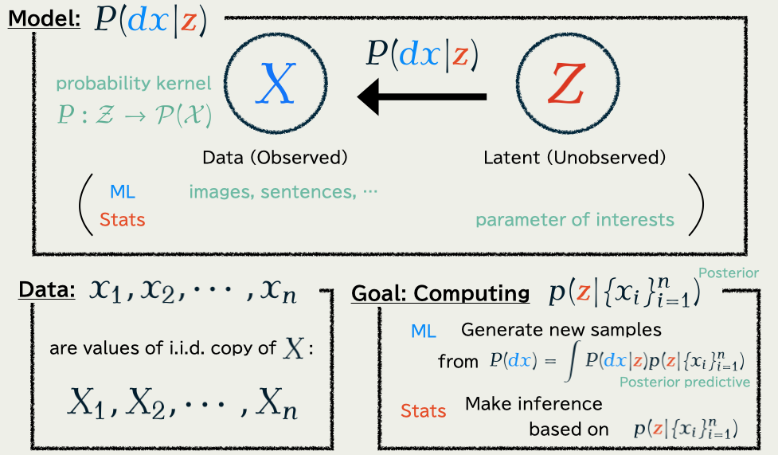
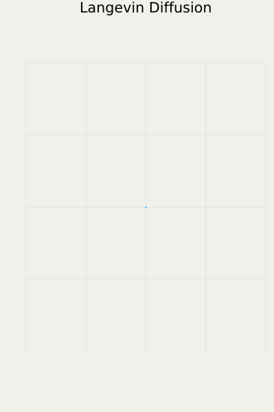
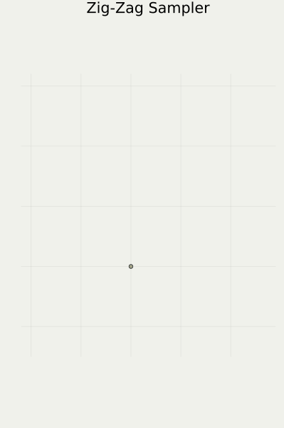
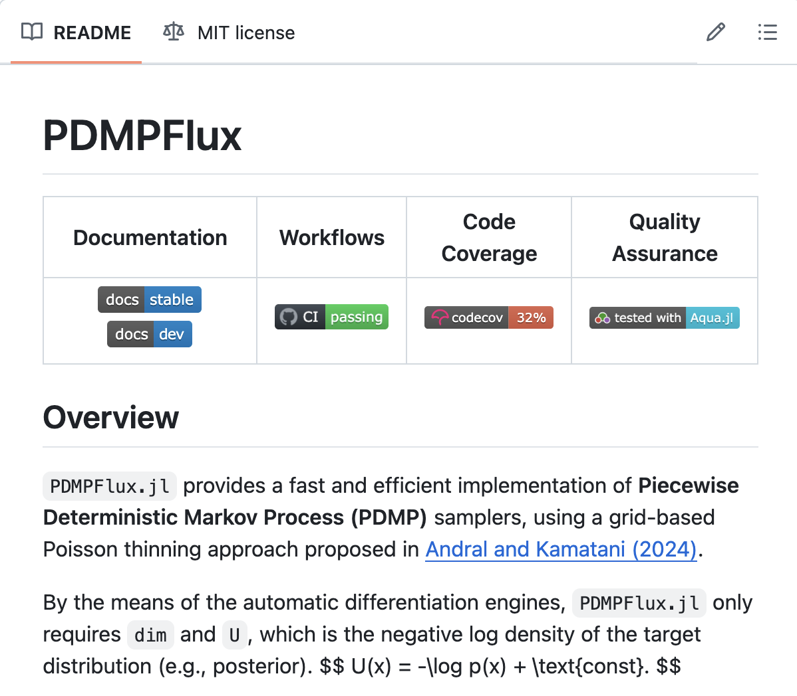
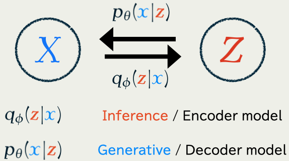
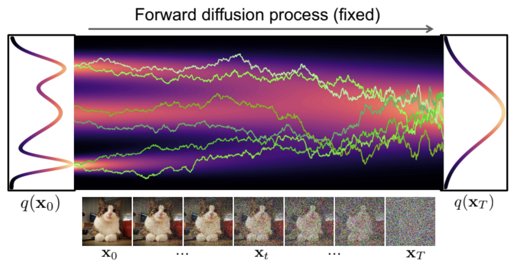

Understanding Discrete Denoising Diffusion Models
Institute of Statistical Mathematics, Tokyo, Japan
7/15/2025
1 (Mathematical) Introduction
- Generative Modeling ≒ Bayesian Modeling
- There are two main approaches:
- Sampling-based Methods: Monte Carlo methods, etc.
- Optimization-based Methods: Diffusion Models, etc.
- Core ideas of the Diffusion Models:
- Discard inference
- Concentrate on learning to generate
1.1 Problem: Bayesian / Generative Modeling
1.2 Two Popular Solutions
To get samples from the posterior: p(\textcolor{#E95420}{z}|\{x_i\}_{i=1}^n)\propto p(\textcolor{#E95420}{z})\prod_{i=1}^n p(x_i|\textcolor{#E95420}{z})=\text{prior}\times\prod_{i=1}^n\text{model likelihood of }x_i
| Sampling-based Methods | Optimization-based Methods | |
|---|---|---|
| Purpose | Get a sample | Get an approximation |
| Scalable? | No (Yet) | Yes |
| Unbiased? | Yes | No |
| E.g. | Monte Carlo | Diffusion Models |
| Mainly used | in Bayesian statistics | in Machine Learning |
1.3 Markov Chain Monte Carlo

Key Property of the Langevin Diffusion
dX_t=-\nabla\log p(X_t)\,dt+\sqrt{2}\,dB_t
converges to p(\textcolor{#E95420}{z}) as t\to\infty.
This is applicable to p(\textcolor{#E95420}{z}|\{x_i\}_{i=1}^n)\propto p(\textcolor{#E95420}{z})\prod_{i=1}^n p(x_i|\textcolor{#E95420}{z}) because …
\nabla\log p(\textcolor{#E95420}{z})\quad(\text{score function})
is the only quantity that matters.
1.4 Piecewise Deterministic Monte Carlo

- Better convergence (Diaconis, 2013), (Andrieu and Livingstone, 2021)
- Better scalability
(Bierkens et al., 2019) - Numerical stability
(Chevallier et al., 2025)
Available in our package PDMPFlux.jl

1.5 Variational Inference
\text{Posterior distribution:}\qquad p(\textcolor{#E95420}{z}|\boldsymbol{x})\propto p(\textcolor{#E95420}{z})\prod_{i=1}^n p(x_i|\textcolor{#E95420}{z}) is searched in a variational formulation via KL divergence: p(\textcolor{#E95420}{z}|\boldsymbol{x})=\argmin_{q\in\mathcal{P}(\mathcal{Z})}\operatorname{KL}\bigg(q(\textcolor{#E95420}{z}),p(\textcolor{#E95420}{z}|\boldsymbol{x})\bigg).
Scalable Solution to VI
- Constrain the problem on q\in\{q_{\textcolor{#E95420}{\phi}}\}_{\textcolor{#E95420}{\phi}\in\R^d},
- Solve by (stochastic) optimization, using the gradient of \operatorname{KL}\bigg(q_{\textcolor{#E95420}{\phi}}(\textcolor{#E95420}{z}),p(\textcolor{#E95420}{z}|\boldsymbol{x})\bigg)=\operatorname{E}_{\textcolor{#E95420}{\phi}}[\log q_{\textcolor{#E95420}{\phi}}(\textcolor{#E95420}{Z})] -\operatorname{E}_{\textcolor{#E95420}{\phi}}[\log p(\textcolor{#E95420}{Z},\boldsymbol{x})]+\text{const.}
1.6 Variational Auto-Encoder (VAE)
In generative modeling, we also have to learn p\in\{p_{\textcolor{#2780e3}{\theta}}\}_{\textcolor{#2780e3}{\theta}\in\R^e}
Jointly trained to minimize the KL divergence \operatorname{KL}\bigg(q_{\textcolor{#E95420}{\phi}}(\textcolor{#E95420}{z}|\textcolor{#2780e3}{x}),p_{\textcolor{#2780e3}{\theta}}(\textcolor{#E95420}{z}|\textcolor{#2780e3}{x})\bigg).
1.6 Variational Auto-Encoder (VAE)
(Kingma and Welling, 2014) found that a part of the KL divergence \begin{align*} &\operatorname{KL}\bigg(q_{\textcolor{#E95420}{\phi}}(\textcolor{#E95420}{z}|\textcolor{#2780e3}{x}),p_{\textcolor{#2780e3}{\theta}}(\textcolor{#E95420}{z}|\textcolor{#2780e3}{x})\bigg)\\ &\qquad=\operatorname{E}_{\textcolor{#E95420}{\phi},\textcolor{#2780e3}{x}}[\log q_{\textcolor{#E95420}{\phi}}(\textcolor{#E95420}{Z}|\textcolor{#2780e3}{x})] -\operatorname{E}_{\textcolor{#E95420}{\phi},\textcolor{#2780e3}{x}}[\log p_{\textcolor{#2780e3}{\theta}}(\textcolor{#E95420}{Z},\textcolor{#2780e3}{x})]+\log p_{\textcolor{#2780e3}{\theta}}(\textcolor{#2780e3}{x})\\ &\qquad=\underbrace{\operatorname{KL}\bigg(q_{\textcolor{#E95420}{\phi}}(\textcolor{#E95420}{z}|\textcolor{#2780e3}{x}),p_{\textcolor{#2780e3}{\theta}}(\textcolor{#E95420}{z})\bigg)-\operatorname{E}_{\textcolor{#E95420}{\phi},\textcolor{#2780e3}{x}}[\log p_{\textcolor{#2780e3}{\theta}}(\textcolor{#2780e3}{x}|\textcolor{#E95420}{Z})]}_{=:-\operatorname{ELBO}(\textcolor{#2780e3}{\theta},\textcolor{#E95420}{\phi})\text{ : we only optimize this part}}+\log p_{\textcolor{#2780e3}{\theta}}(\textcolor{#2780e3}{x}) \end{align*} still lends itself to stochastic optimization.
Once \textcolor{#2780e3}{\theta^*} is learned, we are able to sample from p_{\textcolor{#2780e3}{\theta^*}}(\textcolor{#2780e3}{x})=\int_{\mathcal{Z}}p_{\textcolor{#2780e3}{\theta^*} }(\textcolor{#2780e3}{x}|\textcolor{#E95420}{z})p_{\textcolor{#2780e3}{\theta^*} }(\textcolor{#E95420}{z})\,d\textcolor{#E95420}{z}
1.7 Denoising Diffusion Models (DDM)
Concentrating on learning p_{\textcolor{#2780e3}{\theta}}, we fix q_{\textcolor{#E95420}{\phi}}(\textcolor{#E95420}{z}|\textcolor{#2780e3}{x})=q(\textcolor{#E95420}{z}|\textcolor{#2780e3}{x})=q^{t_1}(\textcolor{#E95420}{z_1}|\textcolor{#2780e3}{x})\prod_{i=1}^T q^{t_{i+1}-t_i}(\textcolor{#E95420}{z_{i+1}}|\textcolor{#E95420}{z_{i}}), as a path measure on \mathcal{Z}=(\R^d)^{T+1} of the Langevin diffusion.

1.7 Denoising Diffusion Models (DDM)
As proposed in (Sohl-Dickstein et al., 2015), the KL will reduce to \begin{align*} \mathcal{L}(\textcolor{#2780e3}{\theta})&=\operatorname{KL}\bigg(q(\textcolor{#E95420}{z_{1:T}}|\textcolor{#2780e3}{x}),p_{\textcolor{#2780e3}{\theta}}(\textcolor{#E95420}{z_{1:T}}|\textcolor{#2780e3}{x})\bigg)\\ &=\operatorname{E}[\log q(\textcolor{#E95420}{Z_{1:T}}|\textcolor{#2780e3}{x})]-\operatorname{E}[\log p_{\textcolor{#2780e3}{\theta}}(\textcolor{#2780e3}{x},\textcolor{#E95420}{Z_{1:T}})]+\log p_{\textcolor{#2780e3}{\theta}}(\textcolor{#2780e3}{x})\\ &=:-\operatorname{ELBO}(\textcolor{#2780e3}{\theta})+\log p_{\textcolor{#2780e3}{\theta}}(\textcolor{#2780e3}{x}). \end{align*} By maximizing the \operatorname{ELBO}(\textcolor{#2780e3}{\theta}), we are still performing a form of (approximate) maximum likelihood inference since \operatorname{ELBO}(\textcolor{#2780e3}{\theta})\le\log p_{\textcolor{#2780e3}{\theta}}(\textcolor{#2780e3}{x}). Although approximate as inference, it proved to be very effective in generating high-quality images (Ho et al., 2020).
1.7 Denoising Diffusion Models (DDM)
It is because DDM learns how to denoise a noisy data. DDM …
× constrains the posterior to be \operatorname{N}(0,I_d),
○ the whole training objective is devoted to learn the generator p_{\textcolor{#2780e3}{\theta}}
A very famous figure from (Kreis et al., 2022)
1.8 Score-based Diffusion Models
Proposition about the Langevin Diffusion (Anderson, 1982)
The following two processes have the same distribution, but in the opposite direction:
\text{Langevin diffusion:}\qquad\qquad d\textcolor{#E95420}{Z}_t=U_t(\textcolor{#E95420}{Z_t})\,dt+dB_t \text{Denoising diffusion:}\quad d\textcolor{#2780e3}{X}_t=\bigg(-U_{T-t}(\textcolor{#2780e3}{X_t})+\underbrace{\nabla\log p_{\textcolor{#2780e3}{\theta}}^{T-t}(\textcolor{#2780e3}{X_t})}_{\text{score function}}\bigg)\,dt+dB'_t
To learn the path measure p_{\textcolor{#2780e3}{\theta}} is to learn the score s_{\textcolor{#2780e3}{\theta}} by the loss \mathcal{L}(\textcolor{#2780e3}{\theta})=\int^T_0\operatorname{E}\bigg[\bigg|\nabla\log p_{\textcolor{#2780e3}{\theta}}^t(\textcolor{#E95420}{Z_t}|\textcolor{#2780e3}{x})-s_{\textcolor{#2780e3}{\theta}}(\textcolor{#E95420}{Z_t},t)\bigg|^2\bigg]\,dt.
1.9 Flow Matching
The solution to the following ODE \frac{d\textcolor{#2780e3}{X}_t}{dt}=U_t(\textcolor{#2780e3}{X_t})-\frac{1}{2}\nabla\log p_{\textcolor{#2780e3}{\theta}}^t(\textcolor{#2780e3}{X_t}) \tag{1} has the same 1d marginal distributions as the reverse-time Langevin diffusion d\textcolor{#2780e3}{X_t}=\bigg(-U_{T-t}(\textcolor{#2780e3}{X_t})+\nabla\log p_{\textcolor{#2780e3}{\theta}}^{T-t}(\textcolor{#2780e3}{X_t})\bigg)\,dt+dB'_t. Equation (1) provides a faster way to sample from \{\textcolor{#2780e3}{X_t}\}_{t=0}^T.
Summary
- Generative Modeling ≒ Bayesian Modeling
- There are two main approaches:
- Sampling-based Methods: MCMC, PDMC, etc.
- Optimization-based Methods: VI, VAE, DDM, etc.
- Core ideas of the DDM:
- Discard modeling inference process q_{\textcolor{#E95420}{\phi}}
- Concentrate on learning to generate from p_{\textcolor{#2780e3}{\theta}}
Question
“Fixing q_{\textcolor{#E95420}{\phi}} to be a Langevin diffusion” was really a good idea?
2 Discrete Diffusion Models
Discrete state space \mathcal{Z} (e.g. images, texts) offers …
- a diverse choice of inference processes q_{\textcolor{#E95420}{\phi}}